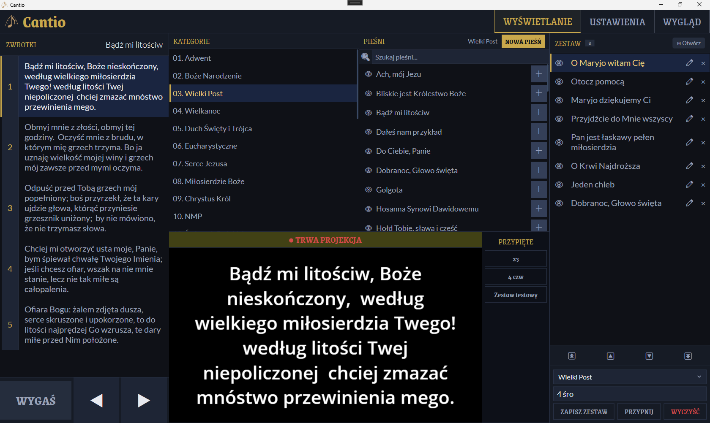
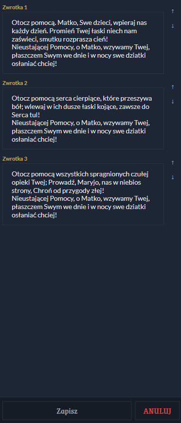
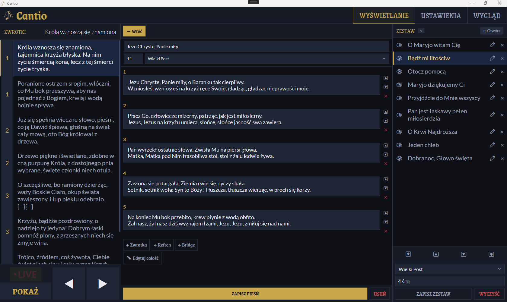
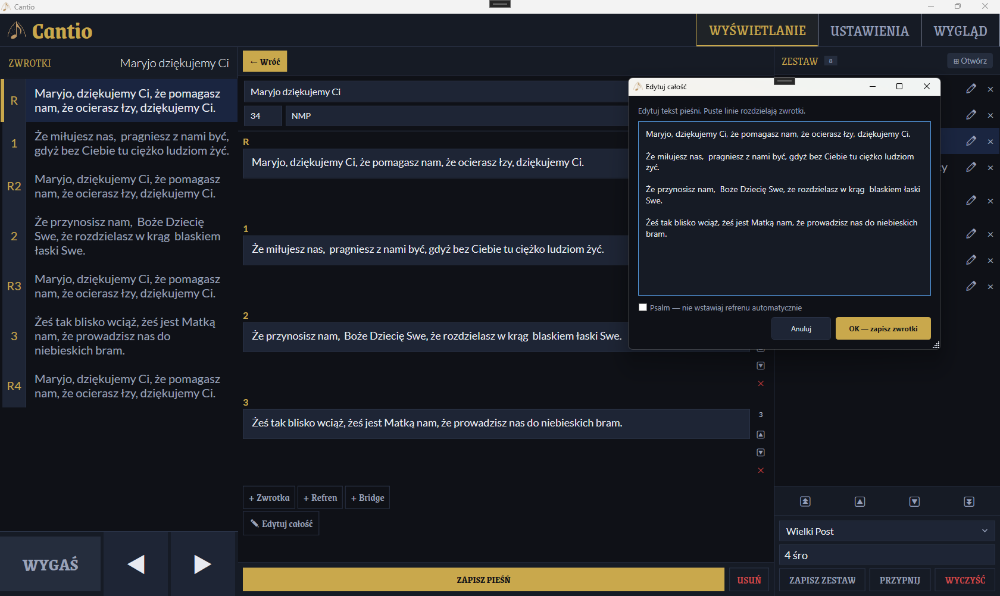
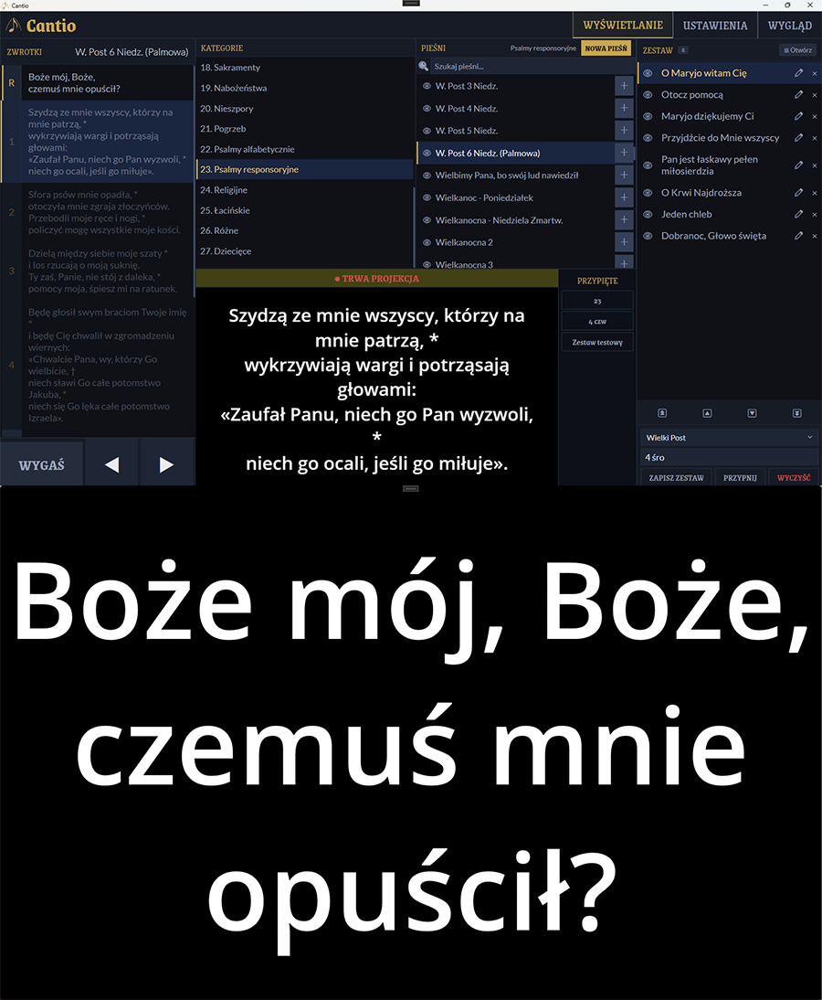
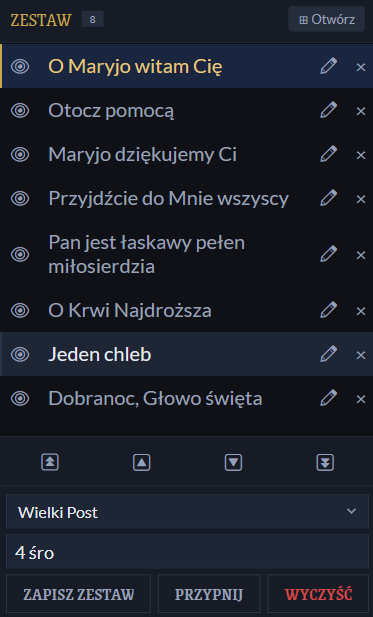
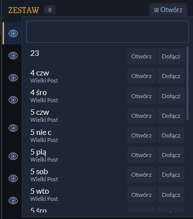
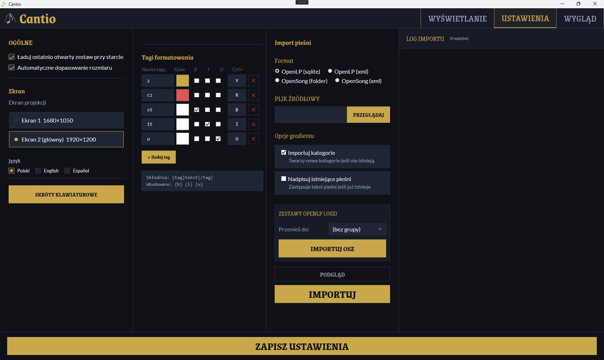
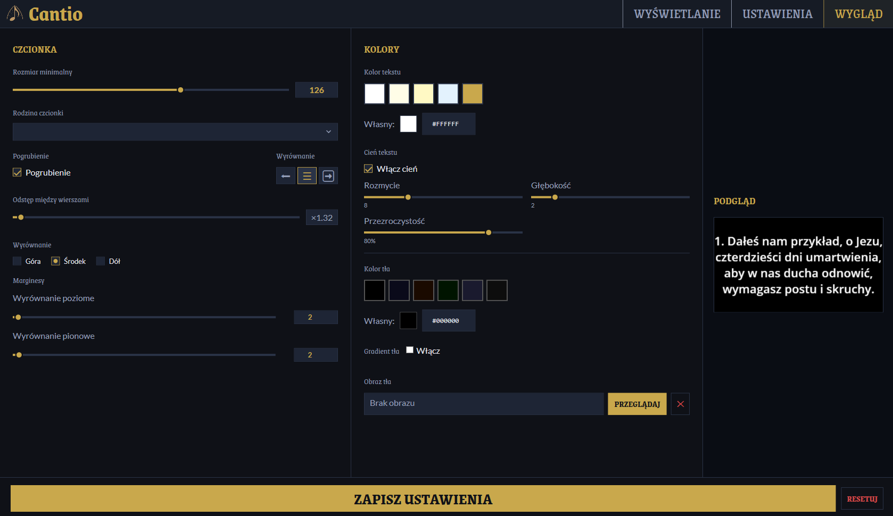
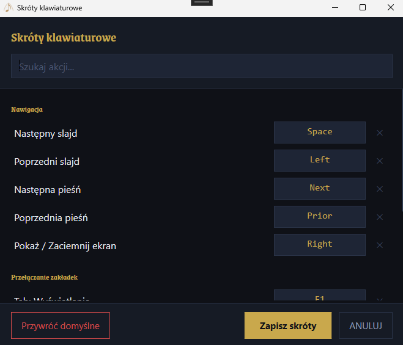

Program dla organisty i kantora
Cantio pozwala wyświetlać tekst pieśni na drugim monitorze lub projektorze podczas nabożeństwa — szybko, spokojnie i bez rozpraszania. Cały interfejs zaprojektowany z myślą o obsłudze dotykowej.

Możliwości
Zaprojektowane z myślą o pracy podczas nabożeństwa — minimum kliknięć, maksimum skupienia.
Tekst pieśni wyświetla się na projektorze lub drugim monitorze w dużej, czytelnej czcionce. Sterowanie odbywa się na komputerze organisty — bez ingerencji w obraz dla wiernych.
Zmień tekst dowolnej zwrotki bez opuszczania widoku sterowania. Panel szybkiej edycji otwiera się w miejscu podglądu — zapisujesz Ctrl+S i jesteś gotowy.
Wszystkie elementy interfejsu — przyciski, listy, suwaki, edytor — mają odpowiedni rozmiar i odstępy do wygodnej obsługi palcem na tablecie lub ekranie dotykowym.
Przygotuj kolejność pieśni przed nabożeństwem i załaduj jednym kliknięciem z popupu zestawów. Zapisuj, grupuj i przypinaj ulubione zestawy.
Osobna sekcja wyglądu: czcionka z auto-fit, kolory, gradient, własna grafika tła, cień tekstu. Zmiany widać na żywo bez wychodzenia z zakładki Pokaż.
Importuj bazę pieśni z OpenLP (SQLite, XML) lub OpenSong bezpośrednio z Ustawień. Przeniesienie danych z zestawami .osz zajmuje kilka sekund.
Zakładka Pokaż
Trzy kolumny: lista kategorii i pieśni po lewej, zwrotki w środku (z etykietami 1 / 2 / R / B), podgląd projektora i zestaw po prawej. Kliknij zwrotkę — pojawia się na projektorze.
Długie zwrotki dzielone są automatycznie na kilka slajdów z zachowaniem czytelności. Przycisk WYGAŚ zaciemnia projektor bez utraty pozycji w pieśni.
Wszystkie elementy interfejsu mają odpowiedni rozmiar i odstępy — Cantio wygodnie obsługuje się palcem na tablecie lub ekranie dotykowym.

Szybka edycja
Kliknij ikonę ołówka przy pieśni w zestawie — panel szybkiej edycji otwiera się w miejscu podglądu. Zmieniasz tekst każdej zwrotki, zmieniasz kolejność, zapisujesz Ctrl+S.
Nie tracisz pozycji w zestawie, nie zmieniasz widoku. Poprawka literówki lub wklejenie brakującej zwrotki zajmuje kilka sekund.
Edytor pieśni
Dodawaj i edytuj pieśni bezpośrednio w programie. Przypisz do kategorii (Adwent, Wielkanoc, Różaniec…), nadaj numer ze śpiewnika, ustaw kolejność zwrotek przeciągając je myszą.
Zwrotki mają czytelne etykiety: 1, 2, R (refren), B (bridge). Wklej cały tekst pieśni naraz — program sam podzieli go na zwrotki po pustych liniach.

Edytor pieśni
Wklej cały tekst pieśni — Cantio sam rozpoznaje refren oznaczony nagłówkiem „Refren:" i układa kolejność wykonania. Schemat R–Z1–R–Z2–R powstaje bez żadnej ręcznej interwencji.
Kolejność zwrotek możesz zawsze zmienić przeciągając je myszą. Przy psalmach automatykę wyłącza się jednym kliknięciem — refreny zostają dokładnie tam, gdzie je wpisałeś.

Psalmy i aklamacje
Dla organisty, który wykonuje psalm jest specjalny tryb. Wskaż w ustawieniach kategorię psalmów responsoryjnych — Cantio automatycznie włącza specjalny tryb po załadowaniu pieśni. Na projektorze przez cały czas widoczny jest refren.
Organista nawiguje po zwrotkach we własnym podglądzie operatora, nie przerywając wyświetlania refrenu wiernym. Tryb działa tak samo dla aklamacji.
Zwrotka refrenu jest także załadowana w całości na ekran, pomijając ustawienie wielkości czcionki. Aby ułatwić śpiew organiście.

Zestawy
Ułóż kolejność pieśni przed nabożeństwem, zapisz zestaw z nazwą i otwórz jednym kliknięciem z popupu. Zestawy można grupować, przypinać i przeszukiwać po nazwie.
Przy otwieraniu zestawu wybierasz co zrobić z aktualną listą: zastąpić ją nowym zestawem albo dołączyć pieśni na koniec — przydatne gdy nabożeństwo składa się z kilku części.
Popup otwiera się skrótem klawiszowym lub przyciskiem w zakładce Pokaż — bez zmiany widoku sterowania. Obsługa importu zestawów z OpenLP (.osz).


Ustawienia
Ekran projekcji, język interfejsu, czcionka z automatycznym dopasowaniem rozmiaru, własne tagi formatowania tekstu — wszystko na jednej stronie ustawień.
Tu znajdziesz też Import — przenieś całą bazę pieśni z OpenLP (SQLite, XML) lub OpenSong w kilka sekund. Obsługiwane formaty: OpenLP SQLite · OpenLP XML · OpenSong · Zestawy .osz

Wygląd
Osobna sekcja wyglądu daje pełną kontrolę nad tym, co widzą wierni: kolor tła, gradient liniowy lub radialny, własna grafika w tle z regulacją krycia, cień tekstu.
Czcionka, rozmiar z automatycznym dopasowaniem do długości zwrotki, interlinię, wyrównanie — zmiany widać na żywo w podglądzie bez konieczności wychodzenia z zakładki Pokaż.

Klawiatura
Wszystkie kluczowe akcje mają skróty klawiaturowe. Świetnie współpracują z pilotem prezentacyjnym (PageDown / PageUp) — a jeśli wolisz dotyk, cały interfejs jest na to gotowy.
Wszystkie skróty można zmienić w osobnym popupie skrótów.

Instalacja
Windows 10 lub nowszy, 64-bit. Opcjonalnie drugi monitor lub projektor.
Pobierz najnowszy plik CantioSetup-x.y.z.exe z GitHub Releases.
Zatwierdź monit UAC, wybierz czy chcesz przykładową bazę pieśni (zalecane) czy pustą — i kliknij Instaluj.
W zakładce Ustawienia → Ekran wskaż projektor lub drugi monitor i zapisz ustawienia.
Wybierz kategorię, kliknij pieśń, kliknij zwrotkę — pojawia się na projektorze. Gotowe.
Darmowy program open-source dla każdej parafii, wspólnoty i organisty.
↓ Pobierz najnowszą wersję